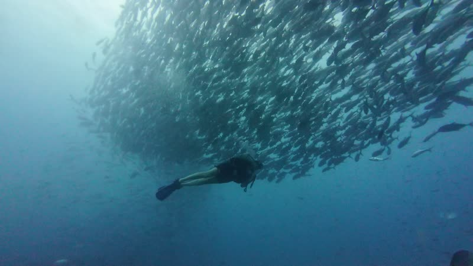

2 Tage · SSI

Advanced Open Water
Der natürliche nächste Schritt nach dem Open Water. Tiefere Tauchplätze, bessere Tarierung, bessere Navigation und Tauchgänge, bei denen es nicht mehr um die Übungen geht, sondern darum, wo du bist.
2 Tage12,500฿
Details